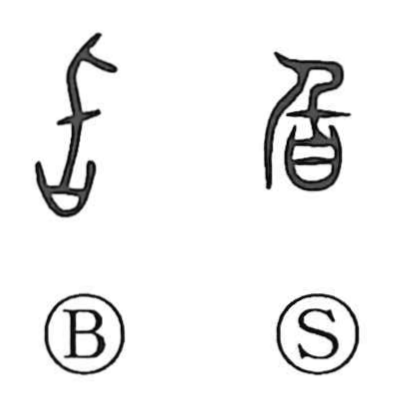

旨

Kun: mune, umai, umashi | On: shi
delicious ・ taste ・ gist ・ purport
Explanation
Shirakawa reads 旨 as a compound of 氏 and 日. In early forms, 氏 depicts a small knife used by a clan leader to carve sacrificial meat at the clan meal, while 日—often a covenant vessel holding a prayer slip—here instead represents a container filled with cooked meat. The graph shows cutting what is in the vessel with the small blade, and from the act of eating it came to mean good flavor, hence tasty and delicious. By extension from savor in food, it also came to suggest charm, elegance, and refined taste. Shirakawa distinguishes this graph from a similar-looking form where the vessel contains written prayers that invite the descent of deities, which yields the sense of “to reach, to come to.”